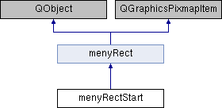

Inheritance diagram for menyRectStart:

Additional Inherited Members | |
 Public Member Functions inherited from menyRect Public Member Functions inherited from menyRect | |
| menyRect () | |
| default konstruktorn sätter meny vaiabeln till true då det betyder att load game är selected More... | |
| void | keyPressEvent (QKeyEvent *event) |
| denna funktion analyserar om du vill gå upp eller ner i menyn More... | |
Detailed Description
Definition at line 8 of file menyrectstart.h.
Constructor & Destructor Documentation
◆ menyRectStart()
| menyRectStart::menyRectStart | ( | ) |
Definition at line 4 of file menyrectstart.cpp.
5{
6 setPixmap(QPixmap("/home/marcus/build-Projekt_Game_Marcus-Desktop_Qt_6_2_2_GCC_64bit-Debug/bilder/play.png"));
7 setPos(400,200);
8}
The documentation for this class was generated from the following files: